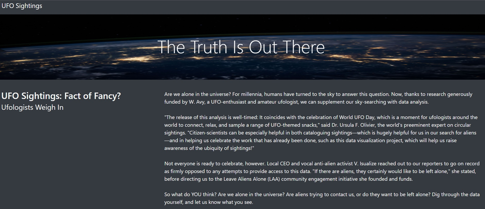

Enviroment, Social, Governance Ratings make companies work on sustainabilty but it also dents their bottomline. This project analyzes a few stocks from Forbes 100 ESG stocks for 2022 and uses fbprophet to predict the trends so common people like you and me can start ESG investing and provides ESG scores and industry wide ESG details for informed decisions
Analyzed Amazon reviews on camera and related products stored in Amazon AWS using PySpark on Google Colab Notebooks.
Mapped earthquake data and visualizing using javascript, D3, leaflet.js and Mapbox map API.
Extracted movies data from kaggle movieland and wiki movies as JSON, CSV transform it using Python, Pandas and finally load it in Postgresql database.
Migrated an employee database to SQL for Pewlett Hackard, a hypothetical technology company and use SQL for data modelling and analysis for smooth transition to an upcoming silver tsunami.
Scrape all data on the web on mission to Mars and store it in MongoDB and finally put it together on a web application based on flask.
Used google map APIs, Openweather API to retrieve and analyze weather data for 500 cities for a hypothetical travel company, PlanMyTrip.
Used javascript to manipulate json data on belly button diversity and prepared dashboards to present the data using plotly.

Create a website decicated to UFO enthusiasts having data about UFO sightings all across the world